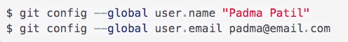
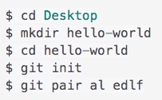
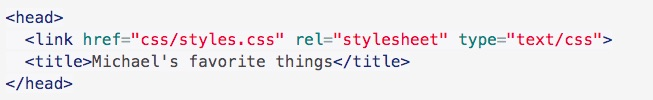
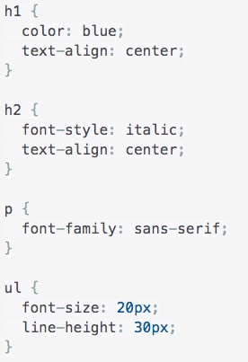

If you are working alone, you need to set up a global configuration instead, using the following commands:
To initiate the git pair for a project, use the following commands:
"al" and "edlf" refer to the pairs initials in this example.
Now we need to tell our HTML document to listen to this CSS, by writing it in the code
If you want to copy and paste, follow this link
You will type css setting into the styles.css file on atom, like the example below
In the example above, Each individual block is a rule. h1, h2, p, and ul are all selectors. color, text-align, font-style, font-family, font-size and line-height are all properties. blue, center, italic, sans-serif, 20px and 30px are all values. The entire file styles.css is a stylesheet.
You can set up classes (or tags) for specific functions in css. If you want to set a rule that everytime you code in a certain word, like "important", you can shortcut to a particular function. It would look something like this:
You can create clones of the master repository so you can work on the project without affecting the master document.
To make a branch, you need to
You wont see your new branch until you push your code into it, by typing:
Now you should see a new branch appear in your git hub repositiory
There is an overview of branching and major processes leading up to it here